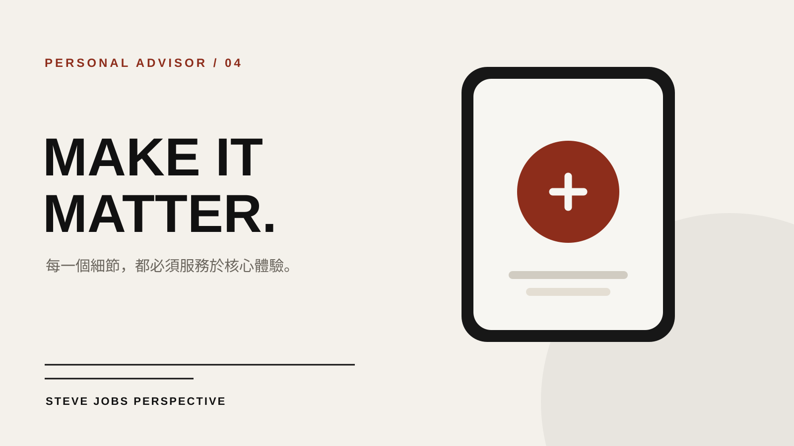

技能包 · 專屬顧問
Steve Jobs 專屬產品品味顧問
2026.08 · 個人專案

FIG. 15 — 產品主畫面
關於這個作品
以 Steve Jobs 的公開演講、訪談、著作與產品決策紀錄為基礎蒸餾的專家 Agent。
它會從產品的核心承諾出發，剔除不必要的功能與訊息，檢視使用者感受、整體性與細節是否一致，協助把產品概念收斂成清楚、有辨識度的體驗。
作品亮點
以產品核心承諾檢查功能取捨
從端到端體驗檢視整體一致性
以使用者感受與品味挑戰平庸方案
把複雜概念收斂為清楚的產品敘事